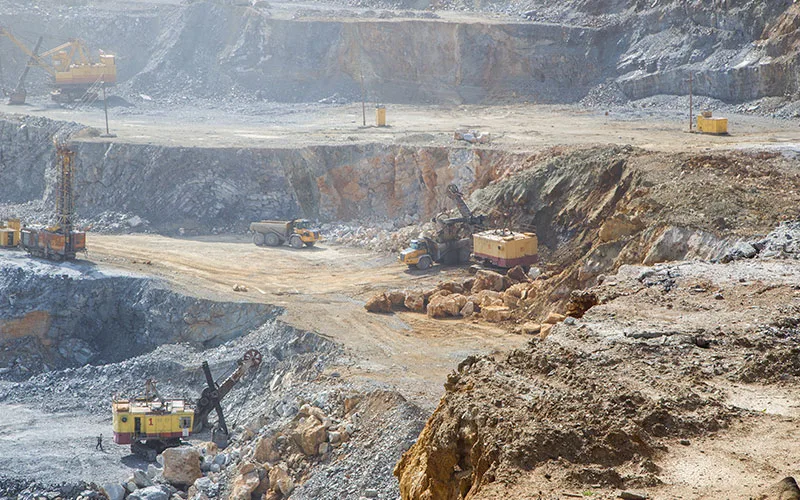

Os Impactos Ambientais da Mineração
Da extração ao beneficiamento, conheça os principais desafios ambientais do setor e como a tecnologia pode mitigá-los.

A mineração tem papel vital em nossa sociedade. Essa indústria emprega milhões de pessoas em todo o mundo e movimenta enorme quantidade de material diariamente, utilizado em toda a cadeia produtiva.
Praticamente todos os produtos que utilizamos no dia a dia possuem algum material oriundo da exploração mineral em sua composição, de carros e celulares até o creme dental que usamos diariamente. Isso torna a mineração a base de toda a produção de bens consumidos, além de crucial para os avanços tecnológicos, que demandam cada vez mais metais como estanho, cobre, alumínio, lítio, níquel, prata e ouro.
No Brasil, o setor mineral tem papel ainda mais central na economia: o país é um dos maiores produtores mundiais de minério de ferro, bauxita, nióbio e outros minerais estratégicos. A atividade movimenta cadeias produtivas inteiras e sustenta regiões que dependem diretamente dos royalties e impostos gerados pela exploração mineral. Esse peso econômico torna ainda mais necessária a discussão séria sobre os impactos ambientais e sociais do setor, não para inviabilizar a mineração, mas para garantir que ela ocorra com o menor impacto possível sobre o meio ambiente e as comunidades do entorno.
Efeitos ambientais da exploração mineral
Mesmo com toda a importância desses processos em nossa vida, a mineração carrega uma conotação negativa perante a opinião pública. Como todo processo de extração de matéria da terra, ela gera impactos no meio ambiente, por isso existem diversas normas e regras que visam minimizar esses impactos e evitar catástrofes ambientais.
Entre os impactos causados, podemos citar:
- Desmatamento
- Contaminação do solo e da água
- Erosão
- Poeira em suspensão
As empresas do setor buscam, de todas as formas, minimizar esses impactos, aplicando tecnologias desenvolvidas com o intuito de atenuar os problemas. Esses esforços costumam se concentrar em três frentes complementares: prevenção na origem do impacto, controle ativo durante a operação e monitoramento contínuo dos resultados, um ciclo que exige tanto investimento em equipamentos quanto em gestão e capacitação das equipes envolvidas.
O marco regulatório brasileiro para a mineração tem se tornado progressivamente mais exigente, especialmente após os desastres de Mariana (2015) e Brumadinho (2019), que forçaram uma revisão profunda das normas de segurança de barragens e das exigências de licenciamento ambiental. Para as mineradoras, isso significa que o compliance ambiental deixou de ser uma questão apenas de evitar multas, passou a ser um fator determinante para a obtenção e renovação das licenças que permitem a continuidade da operação.
A água na mineração
Um dos recursos essenciais para a mineração é a água, presente em toda a cadeia produtiva, da exploração ao beneficiamento. Com isso, uma das principais preocupações das empresas é a preservação e o uso correto desse recurso. Boa parte da água utilizada nos processos é tratada para voltar a ser utilizada.
Ao longo do processo, parte dessa água pode ser contaminada com metais pesados, muitas vezes armazenada em barragens de rejeitos, que existem para reter as partículas sólidas e evitar a contaminação dos cursos d'água a jusante. Para evitar catástrofes ambientais, diversas tecnologias são desenvolvidas com o objetivo de ajudar no gerenciamento desses resíduos e das águas.
A segurança de barragens passou a ser regida pela Política Nacional de Segurança de Barragens (Lei 12.334/2010, atualizada pela Lei 14.066/2020 após Brumadinho), que exige monitoramento contínuo, planos de ação de emergência e critérios mais rigorosos para a certificação de segurança das estruturas. Reduzir o volume de água armazenada nessas estruturas, e consequentemente a pressão sobre os taludes, é hoje uma das estratégias mais diretamente relacionadas à segurança operacional nas mineradoras que ainda mantêm barragens ativas.
A Suppress vem desenvolvendo tecnologias para minimizar esse impacto, fornecendo soluções para esvaziamento de barragens através de equipamentos evaporadores. Utilizando a estrutura-base do nosso maior canhão de névoa, o SP-150, que conta com tecnologia sueca já consagrada na linha de equipamentos para abatimento de poeira, o SP-150e conta com alta vazão de água e ventilação para projetá-la a uma distância de até 180 metros, mantendo as gotículas no ar por mais tempo e acelerando o processo de evaporação. Os bicos especiais lançam uma névoa com gotículas no tamanho ideal para aumentar a área de contato da água com o ar, tornando a evaporação ainda mais rápida. Esse mesmo princípio de evaporação acelerada é aplicado de forma mais ampla nos evaporadores industriais Suppress, voltados à gestão sustentável de efluentes em diversos setores.
Emissões geradas pela indústria
Outro impacto ambiental causado pela mineração são as emissões de partículas no ar. Uma imagem que perdura no imaginário popular quando se fala em mineração é a poeira, não só na mineração, mas na indústria em geral, ela está sempre presente durante a manipulação de materiais a granel e outras operações.
A poeira é uma resultante difícil de controlar: é inevitável que ela ocorra e, a depender das condições do ambiente, como o vento, pode ser rapidamente propagada a longas distâncias, atingindo centros populacionais, dificultando a execução das atividades na área operacional e causando danos à saúde de pessoas no entorno do ponto de emissão. Os riscos à saúde associados à exposição prolongada a particulado mineral são detalhados no artigo sobre poeira na mineração: riscos à saúde e normas de controle.
Uma dimensão frequentemente negligenciada das emissões de poeira é o impacto sobre a biodiversidade local. Partículas finas que se depositam sobre a vegetação do entorno das operações podem interferir na fotossíntese das plantas e alterar o pH do solo ao longo do tempo, afetando a recuperação da cobertura vegetal nas áreas de supressão e nas zonas de amortecimento previstas nos programas de recuperação ambiental. Por isso, o controle de emissões não é apenas uma questão de saúde humana ou de relações comunitárias, é também parte integral dos programas de compensação ambiental que acompanham o licenciamento de operações minerais.
As empresas trabalham arduamente para minimizar a emissão de partículas, utilizando técnicas como construção de barreiras para conter a dispersão da poeira, umectação do solo com material polimérico diluído em água e uso de equipamentos para abatimento de poeira conhecidos como canhões de névoa.
Por que pilhas de estocagem exigem atenção especial
Entre os pontos mais críticos de geração de particulado em uma mina estão as pilhas de estocagem a céu aberto. Por ficarem expostas diretamente ao vento e ao sol, essas pilhas perdem umidade superficial ao longo do dia, e a fração mais fina do material, justamente a mais prejudicial à saúde respiratória, se torna mais suscetível à dispersão eólica. Por isso, operações de grande porte costumam adotar rotinas de aspersão programada nessas áreas, ajustando a frequência de aplicação conforme as condições climáticas do dia, e não apenas em horários fixos.
Além das pilhas de estocagem, outros pontos críticos de geração de particulado incluem as vias internas não pavimentadas, percorridas por caminhões e equipamentos pesados ao longo de toda a jornada operacional. O tráfego levanta poeira de forma contínua, e a dispersão gerada por esse tipo de fonte difusa é mais difícil de controlar do que emissões pontuais, pois a área afetada muda conforme o fluxo de veículos. Soluções como canhões de névoa montados em pontos estratégicos ao longo das vias, ou a umectação periódica do leito das estradas internas, são as principais abordagens técnicas para esse tipo de emissão. Para entender como os canhões de névoa atendem especificamente ao contexto de pilhas de estocagem, leia o artigo sobre canhões de névoa em pilhas de materiais.
A Suppress como referência
A Suppress já é empresa referência em canhões de névoa no Brasil, fabricando em solo nacional equipamentos com conceituada tecnologia sueca, comprovada por nossos clientes e por nossa longa experiência no ramo. Temos uma linha completa de equipamentos com alcances variados, que vão de 15 a 150 metros, além de uma equipe técnica qualificada para realizar qualquer tipo de projeto personalizado, atendendo às necessidades específicas de cada cliente. Conheça a linha completa na página de produtos ou veja como a performance dos equipamentos foi validada em campo no estudo técnico do Porto Sudeste.
O posicionamento da Suppress como fornecedora nacional de equipamentos para controle de particulado e gestão de efluentes, duas das frentes ambientais mais críticas da mineração, é resultado de um investimento contínuo em desenvolvimento de produto e em proximidade com as operações dos clientes. A fabricação nacional permite ciclos de manutenção mais ágeis e suporte técnico presencial, fatores relevantes em operações que funcionam em regime contínuo e não podem depender de peças e assistência com prazo longo. Para conhecer mais sobre a trajetória da empresa, visite a página institucional Suppress.
Perguntas Frequentes
Quais são os principais impactos ambientais da mineração?
Os principais impactos incluem desmatamento, contaminação do solo e da água, erosão e geração de poeira em suspensão. As empresas do setor aplicam diferentes tecnologias e normas para minimizar esses efeitos ao longo de toda a cadeia produtiva.
Como a Suppress ajuda na gestão de água em barragens de mineração?
A Suppress fornece equipamentos evaporadores, como o SP-150e, que utilizam alta vazão de água e ventilação para acelerar a evaporação e auxiliar no esvaziamento controlado de barragens de rejeito, reduzindo o volume armazenado de forma sustentável.
Por que pilhas de estocagem a céu aberto geram mais poeira?
Pilhas expostas ao vento e ao sol perdem umidade superficial ao longo do dia, o que torna a fração mais fina do material mais suscetível à dispersão eólica, exigindo rotinas de aspersão ajustadas às condições climáticas diárias.
Quer reduzir os impactos ambientais da sua operação?
Fale com nossos engenheiros e descubra a solução ideal para o controle de poeira e gestão de água.
Solicitar Proposta